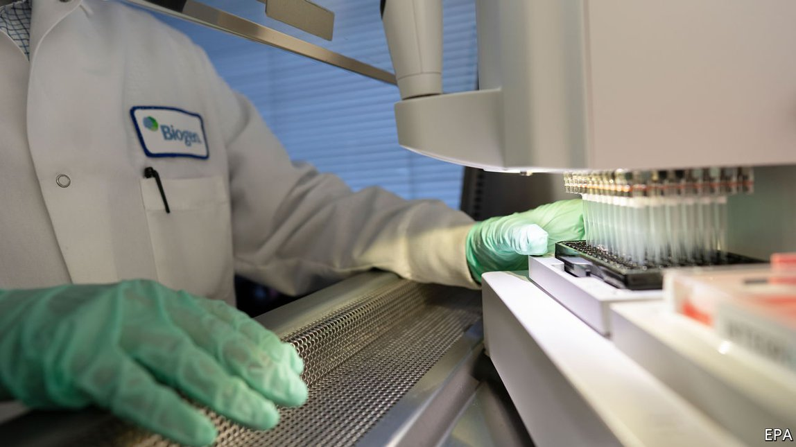
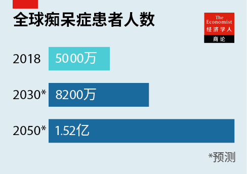
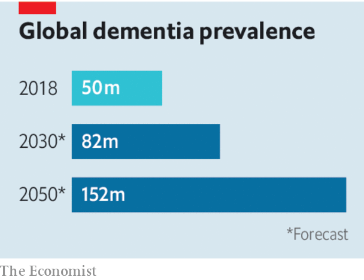

2021-06-22T14:03:24+00:00
【首文】空欢喜
美国对阿尔茨海默病新药的批准过于草率
这可能会带来虚假的希望，并把资源从更有潜力的疗法那里分走
六月七日，美国食品药品监督管理局（以下简称FDA）批准了一款治疗阿尔茨海默病的新药，这是自2003年以来的头一回。一些人对此兴奋不已，这是可以理解的。人们研究了一个世纪都没能找出治疗阿尔茨海默症的有效方法。这种疾病的特点是认知能力不断下降，在所有痴呆症病例中占60%到80%。全球约有5000万痴呆症患者，而随着世界的老龄化，这种病变得日益普遍。
但遗憾的是，FDA承认这款商品名为Aduhelm的单克隆抗体新药并未被证明切实有效。这项批准是一种误判。它有可能提高不切实际的期望，给医疗系统造成经济损失，损害FDA科学公正的声誉，可能还会分走那些更有希望的痴呆症疗法受到的关注。
这个决定也很令人费解。去年11月，该机构自己的专家顾问小组的11名成员中，有10人投票否绝了位于马萨诸塞州剑桥市的生产商渤健（Biogen）对该药物的批准申请（剩下一人的意见是“不确定”）。FDA的批准并不意味着它认可迄今为止的数据显示Aduhelm可以有效减缓认知下降。渤健在这一方面的试验结果充其量也是含糊不清，而实际上，在2019年试验已被认定失败而取消。更确切地说，FDA的批准是在奖赏该药物在清除大脑中的β-淀粉样蛋白沉积上的成功，这种蛋白质会积聚在神经元之间，干扰其正常功能。
“淀粉样蛋白假说”认为，这种蛋白质不仅是阿尔茨海默病的症状，也是其主要成因。这种看法得到了广泛认同（所有阿尔茨海默病患者的大脑都显现出β-淀粉样蛋白积聚）。但这只是一个假设（不是所有出现了β-淀粉样蛋白的大脑都表现出认知障碍）。FDA已要求渤健开展进一步试验，即使该药物已经投入使用。它还警告说，如果试验结果不尽人意，它可能会让该药物下架。渤健表示试验可能需要耗时九年。而且，如果药物已被广泛使用，召回将会很困难。
用Aduhelm治疗的费用为每年5.6万美元，这将给医疗保险公司和医疗服务机构带来巨大的问题。股票市场无疑奖励了渤健的股票，因为它相信一款重磅新药刚刚被绿灯放行。这款药物只推荐处于阿尔茨海默病早期阶段（可通过昂贵的PET扫描确诊）的病人使用，将需要每月在医疗机构接受一次静脉注射。病人需要被密切监护，因为许多人会出现脑肿胀。但由于再无替代方案，数百万美国人将争先恐后地让患有阿尔茨海默病的亲人用上这种药。
FDA这项批准实际上还可能妨碍到某些痴呆症研究。Aduhelm上市后，可能就很难招募到参与者加入新药物的临床试验，也就难以评估试验的结果（如果许多患者已经在使用Aduhelm的话）。而且FDA的这项决定可能还会将更多资源转移到那些试图验证有争议的淀粉样蛋白假说的新研究上。
尽管批准Aduhelm的依据并不充分，它并不意味着目前对痴呆症治疗的研究进展很糟。相反，尽管几年前一些制药公司退出了这个领域，认定它就是一个死胡同，但一些神经学家如今预期会出现重大突破。人们逐渐清楚地了解到可以通过更健康的生活方式来降低罹患痴呆症的风险。在一些西方国家，特定年龄组的痴呆症发病率实际上正在下降。有了血液测试，在高危人群出现症状之前就对其作出诊断已变得容易许多。根据制药行业数据库Pharmaprojects的数据，单是阿尔茨海默病就有其他148种药物正在临床研究中，其中只有约15%针对β-淀粉样蛋白。
痴呆症仍旧是21世纪最严重的健康、社会和经济问题之一，而对一些神经学家来说，任何能激发人们付出更多努力去理解和治疗这种疾病的事物都值得欢迎。这就是为什么即便是在为FDA批准Aduhelm的科学依据感到困惑的人群当中，依然有人为之叫好。然而，毫无疑问，因无计可施而降低标准并不会带来希望，唯遵循科学才会。
2021-06-22T14:03:24+00:00
False positive
America’s approval of an Alzheimer’s drug is premature
It may offer false hope and divert resources from more promising therapies
ON JUNE 7TH America’s Food and Drug Administration (FDA) approved the first new drug since 2003 to treat Alzheimer’s disease. The euphoric reaction in some quarters is understandable. A century of research has produced no effective treatment for Alzheimer’s, which is marked by ever-worsening cognitive decline, and accounts for 60-80% of cases of dementia, a condition affecting perhaps 50m people worldwide and becoming ever more common as the world ages.
But, sadly, the FDA admits that it is not proven that the new drug, a monoclonal antibody to be sold under the name Aduhelm, actually works. The approval is misguided. It risks raising unrealistic expectations, wreaking financial harm on health-care systems, damaging the FDA’s reputation for scientific impartiality and perhaps even diverting attention from more hopeful approaches to treating dementia.
It is also hard to understand. Last November ten of the 11 members of the FDA’s own expert advisory panel voted to reject the application by the producer, Biogen of Cambridge, Massachusetts, for approval of the drug (the 11th was “uncertain”). The FDA’s approval does not mean it accepts that the data so far show that Aduhelm is effective in slowing cognitive decline. Biogen’s trials were at best ambiguous on this point, and indeed in 2019 were called off as failures. Rather, the agency is rewarding the drug’s success in clearing brains of beta-amyloid, a protein that clumps between neurons and disrupts their functioning.
An “amyloid hypothesis” holds that the protein is not just a symptom of the disease, but a prime cause. This is widely believed (all brains with Alzheimer’s exhibit beta-amyloid build-ups). But it is just a hypothesis (not every brain with beta-amyloid exhibits cognitive impairment). The FDA has demanded a further trial, even as the drug goes into use, and has warned it may pull the drug if it is unsatisfactory. Biogen has said that the trial may take nine years. And if the drug is in wide use, withdrawing it would be difficult.
At $56,000 a year, the cost of Aduhelm treatment will create huge problems for health insurers and providers. Certainly the stockmarket has rewarded Biogen’s shares in the belief that a new blockbuster drug has just been given clearance. It is recommended only for people in the early stages of Alzheimer’s, diagnosed by a costly PET scan, and will require a course of monthly intravenous administration at a medical facility. Patients will require close monitoring as many develop brain swellings. But given the lack of any alternative, millions of Americans will be clamouring for the treatment for loved ones with Alzheimer’s.
The FDA’s approval also risks actually impeding some dementia research. Aduhelm might make it hard to recruit participants for clinical trials for new drugs, and to assess the results of them (if many patients are already taking the drug). And it may divert more resources into fresh efforts to validate the disputed amyloid hypothesis.
That the evidence argued against the approval of Aduhelm does not mean that research into treatments for dementia is going badly. On the contrary, whereas a few years ago some pharmaceutical firms were withdrawing from the field, having written it off as a dead end, some neurologists now expect big breakthroughs. A better understanding is emerging of how the risk of developing dementia can be reduced, by living a healthier life. The age-specific incidence of dementia is actually declining in some Western countries. Blood tests make it far easier to diagnose those at high risk before symptoms appear. And, according to Pharmaprojects, an industry database, another 148 drugs for Alzheimer’s alone are in clinical development, only about 15% of which are directed at beta-amyloid.
Dementia remains one of the 21st century’s greatest health, social and economic problems, and, for some neurologists, anything that stimulates greater efforts to understanding and treating it is welcome. That is why even some of those who have been baffled by the scientific basis of the FDA’S Aduhelm approval have applauded it. Surely, however, hope lies not in lowering standards out of desperation, but in following the science. ■
2021-06-22T14:03:24+00:00
【首文】空歡喜
美國對阿爾茨海默病新葯的批准過於草率
這可能會帶來虛假的希望，並把資源從更有潛力的療法那裡分走
六月七日，美國食品藥品監督管理局（以下簡稱FDA）批准了一款治療阿爾茨海默病的新葯，這是自2003年以來的頭一回。一些人對此興奮不已，這是可以理解的。人們研究了一個世紀都沒能找出治療阿爾茨海默症的有效方法。這種疾病的特點是認知能力不斷下降，在所有痴呆症病例中佔60%到80%。全球約有5000萬痴呆症患者，而隨着世界的老齡化，這種病變得日益普遍。
但遺憾的是，FDA承認這款商品名為Aduhelm的單克隆抗體新葯並未被證明切實有效。這項批準是一種誤判。它有可能提高不切實際的期望，給醫療系統造成經濟損失，損害FDA科學公正的聲譽，可能還會分走那些更有希望的痴呆症療法受到的關注。
這個決定也很令人費解。去年11月，該機構自己的專家顧問小組的11名成員中，有10人投票否絕了位於馬薩諸塞州劍橋市的生產商渤健（Biogen）對該藥物的批准申請（剩下一人的意見是“不確定”）。FDA的批准並不意味着它認可迄今為止的數據顯示Aduhelm可以有效減緩認知下降。渤健在這一方面的試驗結果充其量也是含糊不清，而實際上，在2019年試驗已被認定失敗而取消。更確切地說，FDA的批準是在獎賞該藥物在清除大腦中的β-澱粉樣蛋白沉積上的成功，這種蛋白質會積聚在神經元之間，干擾其正常功能。
“澱粉樣蛋白假說”認為，這種蛋白質不僅是阿爾茨海默病的癥狀，也是其主要成因。這種看法得到了廣泛認同（所有阿爾茨海默病患者的大腦都顯現出β-澱粉樣蛋白積聚）。但這只是一個假設（不是所有出現了β-澱粉樣蛋白的大腦都表現出認知障礙）。FDA已要求渤健開展進一步試驗，即使該藥物已經投入使用。它還警告說，如果試驗結果不盡人意，它可能會讓該藥物下架。渤健表示試驗可能需要耗時九年。而且，如果藥物已被廣泛使用，召回將會很困難。
用Aduhelm治療的費用為每年5.6萬美元，這將給醫療保險公司和醫療服務機構帶來巨大的問題。股票市場無疑獎勵了渤健的股票，因為它相信一款重磅新葯剛剛被綠燈放行。這款藥物只推薦處於阿爾茨海默病早期階段（可通過昂貴的PET掃描確診）的病人使用，將需要每月在醫療機構接受一次靜脈注射。病人需要被密切監護，因為許多人會出現腦腫脹。但由於再無替代方案，數百萬美國人將爭先恐後地讓患有阿爾茨海默病的親人用上這種葯。
FDA這項批准實際上還可能妨礙到某些痴呆症研究。Aduhelm上市後，可能就很難招募到參與者加入新藥物的臨床試驗，也就難以評估試驗的結果（如果許多患者已經在使用Aduhelm的話）。而且FDA的這項決定可能還會將更多資源轉移到那些試圖驗證有爭議的澱粉樣蛋白假說的新研究上。
儘管批准Aduhelm的依據並不充分，它並不意味着目前對痴呆症治療的研究進展很糟。相反，儘管幾年前一些製藥公司退出了這個領域，認定它就是一個死胡同，但一些神經學家如今預期會出現重大突破。人們逐漸清楚地了解到可以通過更健康的生活方式來降低罹患痴呆症的風險。在一些西方國家，特定年齡組的痴呆症發病率實際上正在下降。有了血液測試，在高危人群出現癥狀之前就對其作出診斷已變得容易許多。根據製藥行業數據庫Pharmaprojects的數據，單是阿爾茨海默病就有其他148種藥物正在臨床研究中，其中只有約15%針對β-澱粉樣蛋白。
痴呆症仍舊是21世紀最嚴重的健康、社會和經濟問題之一，而對一些神經學家來說，任何能激發人們付出更多努力去理解和治療這種疾病的事物都值得歡迎。這就是為什麼即便是在為FDA批准Aduhelm的科學依據感到困惑的人群當中，依然有人為之叫好。然而，毫無疑問，因無計可施而降低標準並不會帶來希望，唯遵循科學才會。